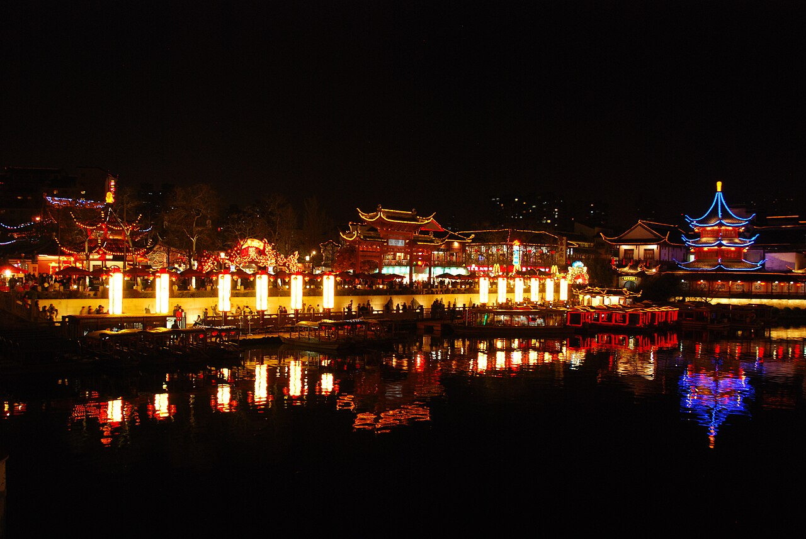
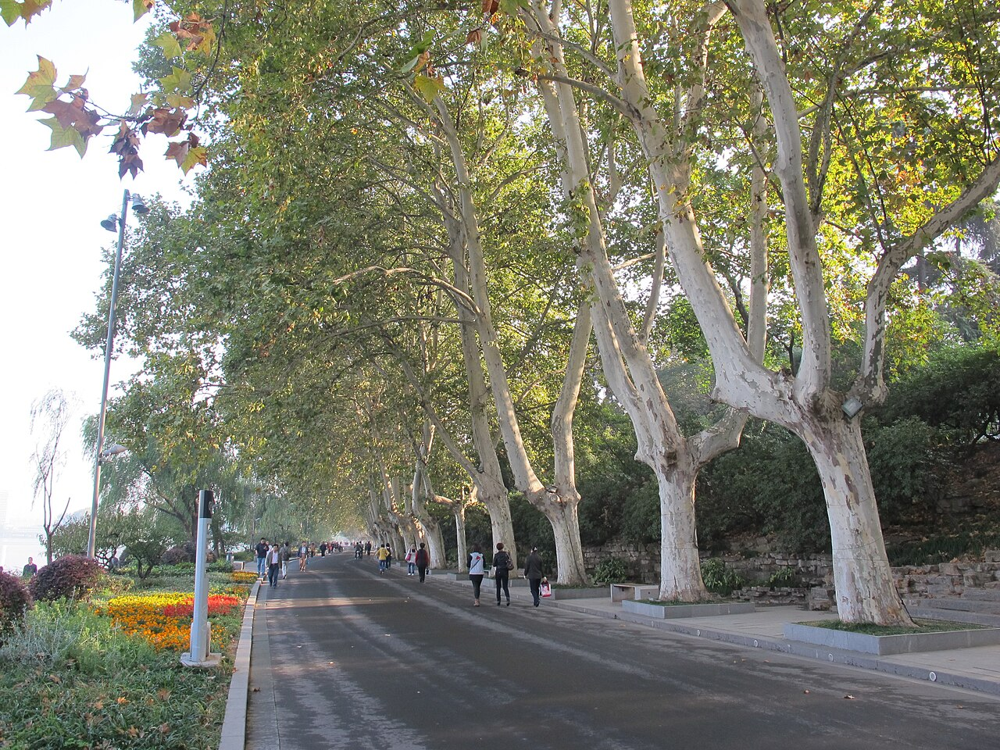
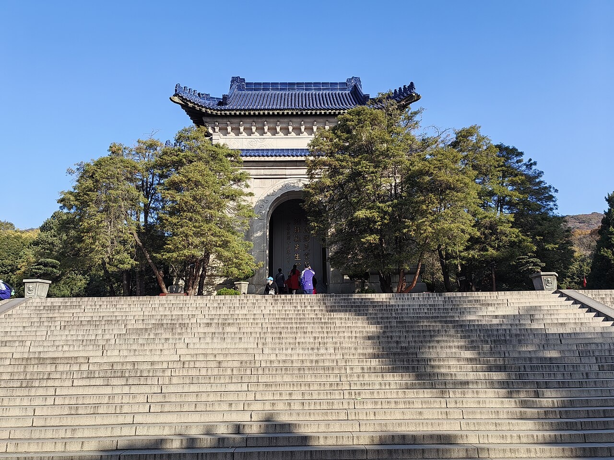
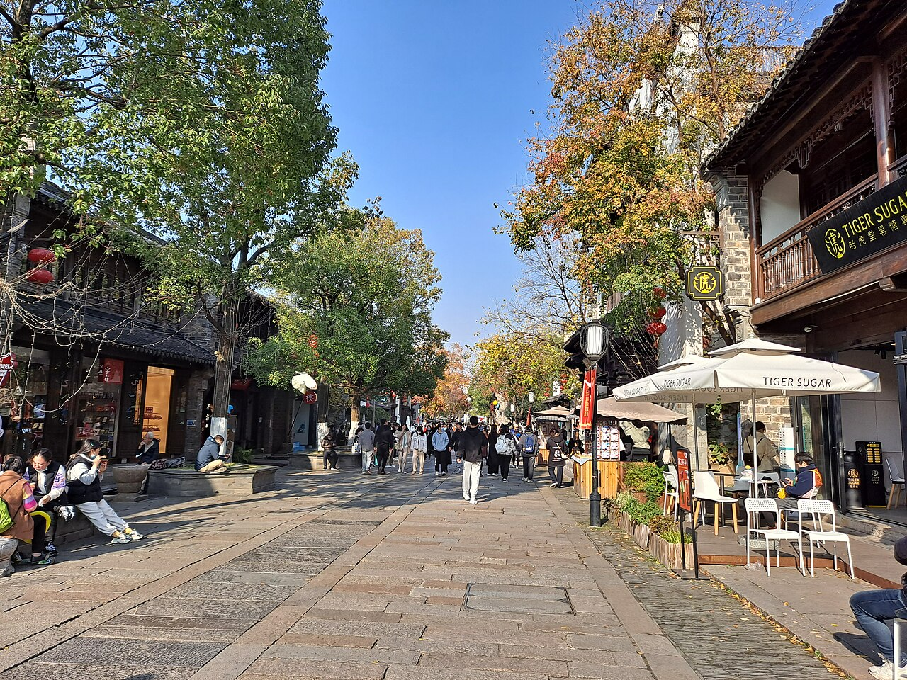
2026.11.9 — 11.11 · 2 人 · 住南京南站诺富特酒店
上午给博物馆 / 钟山，下午给新街口，日落后全部留给秦淮（夫子庙—老门东）。这条顺序也是最省地铁换乘的走法。
南京南站 → 酒店 → 江宁金鹰「海底捞大排档火锅」→ 百家湖夜景
| 时间 | 安排 | 怎么走 / 花费 | 要点 |
|---|---|---|---|
| 18:00–18:20 | 南京南站 → 酒店 | 地铁 3 号线（往林场方向）2 站到大明路站，1 号口出，步行 1 分钟行李多可打车约 10 分钟 | 出站即酒店，全程约 15 分钟 |
| 18:20–19:00 | 办理入住 | — | 顺手确认：11.11 上午退房后行李可寄存前台 |
| 19:00–19:20 | 前往海底捞大排档 | 打车至江宁金鹰购物中心（双龙大道 1688 号），约 10 km / 20 分钟 / 约 30 元推荐打车直达 | 南京公开可查的大排档门店只有江宁金鹰店与江北印象汇店两家。江宁金鹰是离你最近的一家；江北店在浦口，单程 25 km 以上，不建议 |
| 19:20–19:50 | 取号等位 | 到店取号，或提前在海底捞 APP / 小程序远程排号 | 大排档自开业起长期火爆，高峰排队 1–2 小时。周一晚 20:00 相对好排，仍建议18:50 在酒店就线上取号 |
| 19:50–21:20 | 用餐 | 人均约 80–110 元，2 人约 200–240 元 | 与普通海底捞不同：逛吃式自选市集，菜品按盘自取、明档现做，没有传统点单，更像"海鲜火锅大排档" |
| 21:20–21:50 | 百家湖夜景散步 | 商场旁百家湖 1912 街区（双龙大道 1680 号），步行 3–5 分钟 | 临湖酒吧餐饮街区，灯光与湖面倒影是这一带最好的夜景；不想走可直接回酒店 |
| 21:50–22:15 | 返回酒店 | 地铁 1 号线（百家湖 → 南京南站，约 25 分钟） | 第二天要逛博物院，早点休息 |
一馆、一街、一河、一巷，从北往南一路顺，不走回头路
| 时间 | 安排 | 怎么走 / 花费 | 要点 |
|---|---|---|---|
| 09:00–10:00 | 本地特色早餐 | 酒店步行 10–15 分钟到明发商业广场（丁墙路）：尹氏汤包 / 鸡鸣汤包（南京南站店），人均 20–35 元 | 汤包 + 鸭血粉丝 + 赤豆小元宵是标准南京早餐组合 |
| 10:30–11:05 | 酒店 → 南京博物院 | 3 号线 大明路→大行宫（5 站）换 2 号线→明故宫站（2 站），1 号口出步行 8 分钟 | 约 35 分钟；必须带身份证原件，按预约时段刷证入馆，早到不一定能进 |
| 11:05–11:20 | 检票入馆 | 免费已预约 | 16:00 停止检票，17:00 闭馆 |
| 11:20–13:30 | 参观（约 2 小时精华路线） | — | 历史馆（镇院之宝：金兽、釉里红梅瓶、竹林七贤砖画）→ 民国馆（地下复原街景，最出片）→ 特展按兴趣取舍。馆内可寄存背包 |
| 13:30–13:50 | 博物院 → 新街口 | 2 号线 明故宫→新街口 3 站（约 6 分钟）；打车约 2 km / 10 元 | — |
| 13:50–15:00 | 午餐：小厨娘淮扬菜 | 艾尚天地 B 座 3 楼（中山路 132 号），新街口站 7 号口东行 200 米；人均约 101 元 | 本地口碑稳、环境好：老鸡首味狮子头、太祖金陵脆皮烤鸭、淮扬烫干丝、红豆丸子嫩豆花 |
| 15:00–17:10 | 新街口逛街 | 步行即可 | 德基广场（1 期 7 楼有南京大牌档，可作晚餐备选）、金鹰、中央商场；想穿插小吃去明瓦廊，鸭血粉丝、糖芋苗、赤豆元宵都在这条巷子 |
| 17:10–17:40 | 新街口 → 夫子庙 | 2 号线 新街口→大行宫（1 站）换 3 号线→夫子庙站（2 站），2 号口出 | 约 20 分钟，出站就是秦淮河 |
| 17:40–17:50 | 先取晚餐号 | 南京大牌档（平江府店），大石坝街 48 号，从 2 号口步行约 5 分钟 | 晚市排队是常态，先拿号再逛；若等位超过 40 分钟，就改为吃完再逛 |
| 17:50–18:40 | 秦淮河畔步行夜景（免费） | 步行，无需门票 | 泮池 → 天下文枢牌坊 → 乌衣巷 → 沿河看灯影和白墙黑瓦；不坐船也能拍到整条河最好的角度（文德桥上向北拍） |
| 18:40–20:00 | 晚餐：南京大牌档（平江府店） | 大石坝街 48 号，人均约 74 元 | 高评分老字号，一站吃遍南京名点：盐水鸭、民国美龄粥、酒酿赤豆元宵、天王烤鸭包、金陵烤鸭。避开景区主街的"秦淮八绝套餐" |
| 20:00–20:15 | 步行到老门东 | 约 1.2 km / 15 分钟 | 顺剪子巷走，一路是老城南巷子 |
| 20:15–21:30 | 老门东夜景 + 小吃 | 小吃预算 40–50 元/人 | 蒋有记（老门东主街，鸭血粉丝汤 / 牛肉锅贴，秦淮八绝传承店）、小郑酥烧饼（三条营 49 号，鸭油烧饼）、陆氏梅花糕、庙东排骨（甘梅微辣炸排骨） |
| 21:30–21:50 | 回酒店 | 步行至武定门站（约 8 分钟），3 号线 3 站→大明路 | 老门东离武定门站最近，比折回夫子庙站更省力 |
10:30 出门，只走三点；13:50 吃午饭，16:55 到南京南站
| 时间 | 安排 | 怎么走 / 花费 | 要点 |
|---|---|---|---|
| 09:00–10:00 | 本地特色早餐 | 明发商业广场一带：正春园黑猪肉汤包（万象都荟，06:00–21:00）或鸡鸣汤包；人均 20–35 元 | 想更地道可 8:30 出门去李记清真馆（评事街打钉巷 1 号，牛肉锅贴 + 牛肉汤，5:30–19:30，人均约 20），来回约 50 分钟，之后 10:30 从酒店出发 |
| 10:15–10:30 | 退房 + 寄存行李 | — | 关键动作：行李寄存前台，下午回来取，别拖着箱子爬中山陵 |
| 10:30–11:05 | 酒店 → 苜蓿园站 | 3 号线 大明路→大行宫（5 站）换 2 号线→苜蓿园站（3 站） | 约 35 分钟；出站即陵园路北端 |
| 11:05–11:55 | 梧桐大道（陵园路） | 步行 2–3 km免费 | 法桐夹道、金黄落叶，整条路就是取景地；走 50 分钟够拍够逛，不想走可在站口坐景区观光车（约 10 元/人次） |
| 11:55–12:35 | 音乐台 | 门票 10 元/人现场扫码购票 | 弧形草坪看台 + 白鸽群飞；正午前后鸽群仍活跃，拍照坐台阶最高一排 |
| 12:40–13:35 | 中山陵 | 免费预约 12:30–14:30 时段 | 博爱广场 → 陵门 → 392 级台阶 → 祭堂（墓室不开放）。台阶中段回望南京城是经典机位。周一闭馆维护，11.11 是周三，正常开放 |
| 13:35–13:50 | 打车去餐厅 | 中山陵 → 石象路 7 号「六朝瑞庭」，约 2.5 km / 10 分钟 / 约 12 元 | 就在明孝陵四号门旁，车直接开到门口 |
| 13:50–15:35 | 午饭：六朝瑞庭·匠心淮扬菜（中山陵店） | 石象路 7 号（云几向西 50 米），人均约 190 元11:00–21:00 连续营业 | 推荐四道招牌：蟹粉狮子头（汤清肉嫩，淮扬刀工的代表）、清炒河虾仁（现剥小河虾，吃的是鲜甜）、大煮干丝（鸡汤煨透，细如发丝）、松鼠鳜鱼（酸甜挂汁，两人可分食）。时令湖鲜按当日菜单再添一道。 |
| 15:35–15:50 | 打车至苜蓿园站 | 约 2 km / 10 分钟 / 约 12 元 | 别走路，这段留着赶车 |
| 15:50–16:25 | 地铁回酒店 | 2 号线 苜蓿园→大行宫 换 3 号线→大明路 | 约 35 分钟 |
| 16:25–16:30 | 前台取行李 | — | 直接推着箱子下楼，别回房间；顺手检查充电器、外套、身份证 |
| 16:30–16:45 | 酒店 → 南京南站 | 3 号线 2 站（约 8 分钟）；16:35 还没上地铁就直接打车（约 10 分钟） | 地铁出站后进站还要走 5–8 分钟，别卡最后一分钟 |
| 16:45–17:26 | 进站安检 + 候车 | — | 17:26 发车，16:45 到站留 41 分钟，安检进站很从容 |
| 鸡鸣汤包（南京南站店） | 汤包、鸭血粉丝汤、赤豆小元宵 | 人均 25 |
| 百年尹氏汤包（明发商业广场） | 老字号汤包、鸡汤馄饨 | 人均 20 |
| 正春园黑猪肉汤包（万象都荟） | 黑猪肉汤包、鸭血粉丝，06:00 开门 | 人均 25 |
若不想折腾：酒店自助早餐即可，把胃留给午饭和夜宵。
| 项目 | 是否要预约 | 渠道 | 费用 | 何时办 |
|---|---|---|---|---|
| 南京博物院 | 必须，免费但限量 | 微信小程序「南京博物院」（官方唯一渠道，未授权第三方） | 免费 | 11.3（周一）18:00 抢 11.10 上午场（9:00–13:00）；提前 7 天一次性放票，约满即止，当天不放票 |
| 中山陵 | 必须实名预约 | 公众号「南京钟山风景区」/「中山陵园票务中心」/ 美团，或现场自助机 | 免费 | 可约 11.11 12:00–16:00 时段（预约时段：9:00–12:00 / 12:00–16:00）；11.11 周三正常开放 |
| 音乐台 | 不需要预约，买票即入 | 现场扫码 / 钟山风景区购票小程序 | 10 元/人 | 当天 |
| 海底捞大排档 | 不预约，但要排号 | 海底捞 APP / 小程序远程排号，或到店取号 | 人均 80–110 元 | 11.9 18:50 在酒店线上取号 |
| 往返高铁 + 酒店两晚 | — | 12306 / 各平台 | — | 返程已定 11.11 17:26；去程 11.9 傍晚班次尽早订 |
① 南京南站 → ② 诺富特酒店 → ③ 江宁金鹰 · 海底捞大排档 → ④ 百家湖 1912
① 酒店 → ② 南京博物院 → ③ 新街口 → ④ 夫子庙 → ⑤ 老门东
① 酒店 → ② 苜蓿园 → ③ 梧桐大道 → ④ 音乐台 → ⑤ 中山陵 → ⑥ 六朝瑞庭 → ⑦ 南京南站
| 时间 | 餐厅 / 小吃 | 位置 | 人均 | 必点 | 图片 |
|---|---|---|---|---|---|
| 11.9 晚 | 海底捞大排档火锅（江宁金鹰店） | 江宁区双龙大道 1688 号 江宁金鹰购物中心 | 80–110 元 | 自选海鲜 / 现切肉 / 明档小吃，按盘取 | 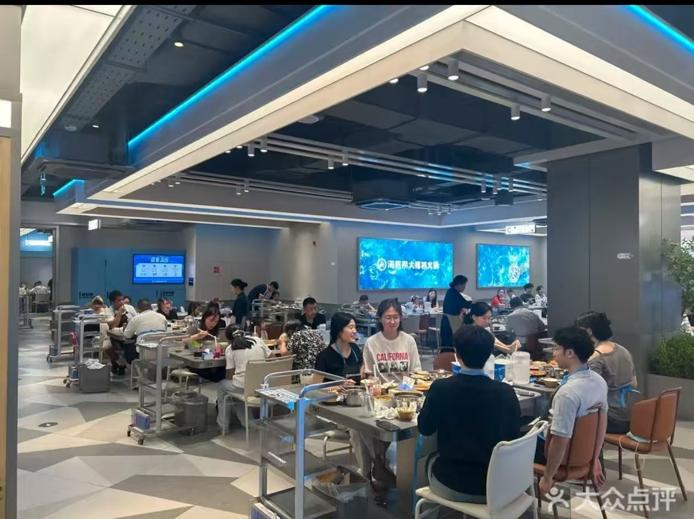 |
| 11.10 早 | 鸡鸣汤包 / 尹氏汤包 | 南京南站、明发商业广场 | 20–35 元 | 汤包、鸭血粉丝、赤豆小元宵 | 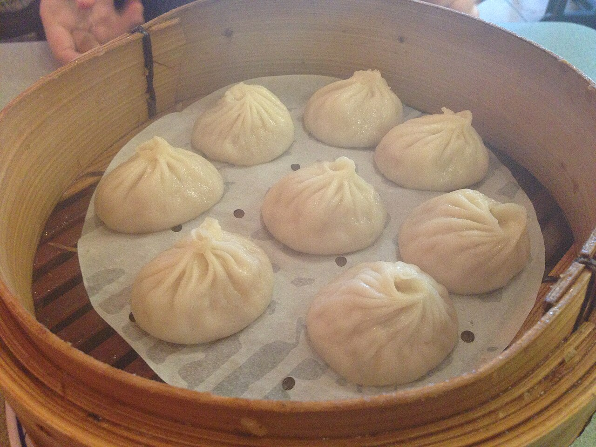 |
| 11.10 午 | 小厨娘淮扬菜（新街口艾尚天地旗舰店） | 中山路 132 号艾尚天地 B 座 3 楼 | 约 101 元 | 狮子头、金陵脆皮烤鸭、烫干丝、嫩豆花 | 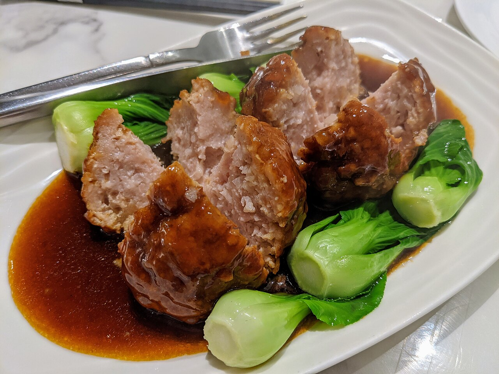 |
| 11.10 晚 | 南京大牌档（夫子庙平江府店） | 大石坝街 48 号 | 约 74 元 | 盐水鸭、美龄粥、赤豆元宵、天王烤鸭包 | 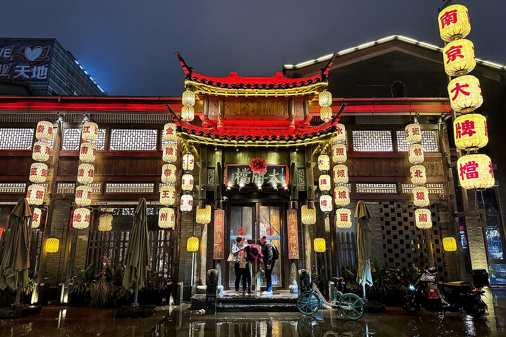 |
| 11.10 夜 | 老门东小吃四连 | 老门东三条营一带 | 40–50 元 | 蒋有记鸭血粉丝/锅贴、小郑酥烧饼、陆氏梅花糕、庙东排骨 | 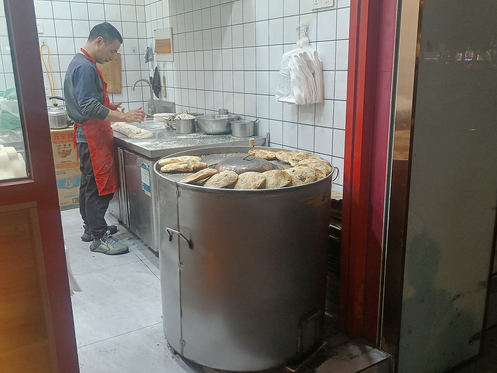 |
| 11.11 早 | 正春园汤包 / 李记清真馆（可选） | 万象都荟 / 评事街打钉巷 1 号 | 20–30 元 | 黑猪肉汤包、牛肉锅贴、牛肉汤 | 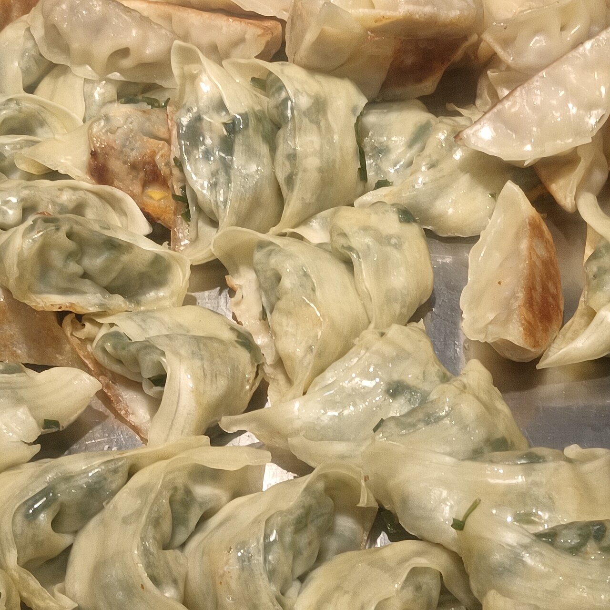 |
| 11.11 午 | 六朝瑞庭·匠心淮扬菜（中山陵店） | 玄武区石象路 7 号（明孝陵四号门旁，云几向西 50 米） | 约 190 元 | 蟹粉狮子头、清炒河虾仁、大煮干丝、松鼠鳜鱼；湖景位需提前订 | 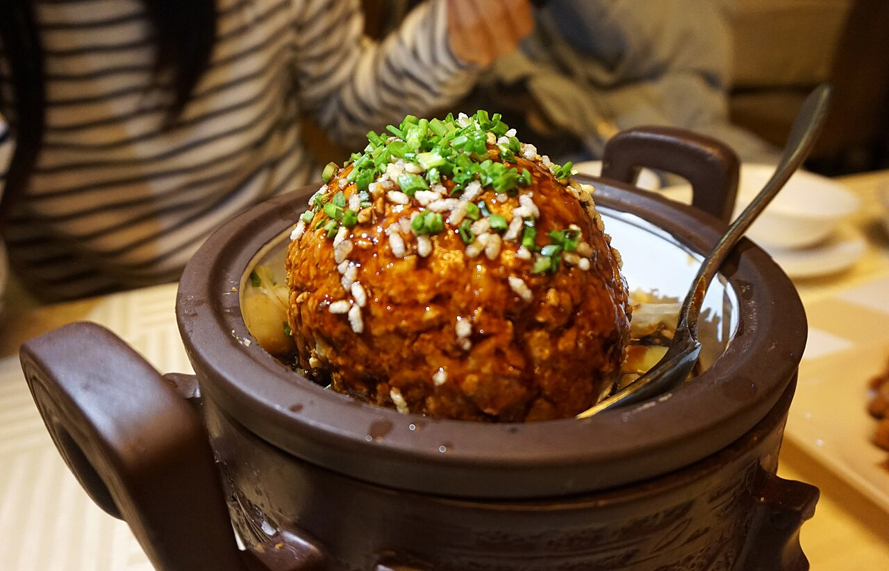 |
| 备用 | 绿柳居（清真老字号） | 建康路 68-1 号（夫子庙站 2 号口步行 460 米） | 约 45 元 | 牛肉锅贴、素菜包、桂花糖芋苗 |